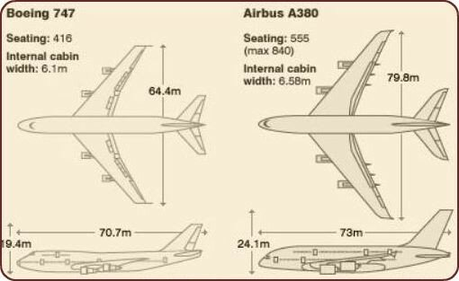

La conception de l'Airbus A380 est née du besoin de répondre à l'augmentation rapide du trafic aérien, en particulier sur les routes long-courriers reliant les principaux hubs mondiaux. L'objectif principal d'Airbus était de développer un avion capable de transporter plus de passagers tout en réduisant les coûts opérationnels par siège. C'est ainsi que l'idée d'un appareil à double pont complet, une première dans l'histoire de l'aviation commerciale, a vu le jour. Cette innovation a permis de maximiser l'espace disponible à l'intérieur de l'avion sans augmenter la longueur de la piste nécessaire pour les décollages et les atterrissages.
Airbus A380 livrée Air France
Une Architecture Aérodynamique Révolutionnaire
L'Airbus A380 se distingue par son architecture unique et ses dimensions imposantes. Avec une envergure de 79,8 mètres et une longueur de 72,7 mètres, il est capable de porter un poids maximum de 575 tonnes au décollage. Ses ailes ont été spécifiquement conçues pour générer une portance optimale, malgré la masse de l'appareil. Ces ailes intègrent également des dispositifs de pointe, comme des winglets, qui réduisent la traînée et augmentent l'efficacité énergétique. Le fuselage du double pont est construit à partir d'un mélange avancé de matériaux composites, d'alliages d'aluminium et de titane, ce qui confère à l'appareil un poids réduit tout en garantissant une solidité exceptionnelle.

taille du Airbus A380 comparée au Boeing B747
Une Collaboration Internationale
Le développement de l'A380 représente l'un des projets industriels les plus ambitieux de l'histoire de l'aviation. Chaque composant majeur de l'avion a été produit dans différents sites à travers l'Europe. Les ailes ont été fabriquées au Royaume-Uni, le fuselage en Allemagne, la queue horizontale en Espagne et l'assemblage final a eu lieu à Toulouse, en France. Le transport de ces pièces gigantesques nécessitait une logistique complexe impliquant des convois routiers spéciaux, des barges fluviales et le Beluga, l'avion-cargo d'Airbus. Ce projet a mobilisé des milliers d'ingénieurs et de techniciens, démontrant la puissance d'une coopération internationale dans le domaine de l'aéronautique.
Un Avion Pensé pour les Passagers et les Compagnies Aériennes
L'intérieur de l'Airbus A380 a été conçu pour offrir un niveau de confort inégalé. Avec une capacité maximale de 853 passagers en configuration tout-économique, il peut également être aménagé pour inclure des suites privées, des salons, des bars et même des espaces de repos pour l'équipage. Cette flexibilité permet aux compagnies aériennes d'adapter l'appareil à leurs besoins spécifiques et à leur clientèle cible. De plus, grâce à ses systèmes modernes de gestion du carburant et à ses moteurs ultra-efficaces (Rolls-Royce Trent 900 ou Engine Alliance GP7200), l'A380 a permis de réduire considérablement les coûts par passager-kilomètre tout en respectant des normes environnementales strictes.
Une Approche Durable et Visionnaire
Malgré sa taille impressionnante, l'A380 a été conçu avec une attention particulière pour réduire son impact environnemental. Ses moteurs de dernière génération et ses systèmes aérodynamiques avancés permettent une consommation de carburant par passager inférieure à celle d'autres avions long-courriers de sa catégorie. Cette efficacité, associée à une capacité d'emport élevée, a permis aux compagnies aériennes de réduire leur empreinte carbone sur les trajets les plus fréquentés.
En somme, l'Airbus A380 représente un chef-d'œuvre d'ingénierie et d'innovation, alliant performances techniques, confort pour les passagers et durabilité environnementale. Il a redéfini les standards de l'aviation commerciale et demeure une icône dans l'histoire de l'aéronautique moderne